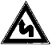
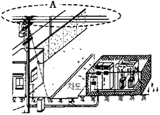

굴삭기운전기능사 (2004-10-10 기출문제)
1. 고속 디젤기관이 가솔린 기관보다 좋은 점은?
- 열효율이 높고 연료 소비율이 적다.
- 운전 중 소음이 비교적 적다.
- 엔진의 출력당 무게가 가볍다.
- 엔진의 압축비가 낮다.
(정답률: 84%)

2. 기관을 시동하기 전에 점검할 사항으로 가장거리가 먼 것은?
- 냉각수 및 엔진오일의 량
- 기관의 온도
- 연료의 량
- 유압유의 량
(정답률: 78%)
3. 일반적인 건설기계에 대한 다음 설명 중 틀린 것은?
- 기관이 과열됐을 때는 기관을 정지시킨 후 냉각수를 조금씩 보충한다.
- 운전 중 팬벨트가 끊어지면 충전 경고등이 꺼진다.
- 윤활 계통에 이상이 생기면 운전 중에 오일압력경고등이 켜진다.
- 연료탱크는 주기적으로 청소를 하여 물과 찌꺼기를 제거시킨다.
(정답률: 62%)
4. 피스톤링의 작용과 가장 관계가 먼 것은?
- 기밀 작용
- 오일제어 작용
- 불완전 연소 억제작용
- 열전도 작용
(정답률: 55%)
5. 기관의 속도에 따라 자동적으로 분사시기를 조정하여 운전을 안정되게 하는 것은?
- 노즐
- 과급기
- 타이머
- 디콤퍼
(정답률: 63%)
6. 압축말 연료분사 노즐로부터 실린더 내로 연료를 분사하여 연소시켜 동력을 얻는 행정은?
- 폭발행정
- 압축행정
- 배기행정
- 흡기행정
(정답률: 79%)
7. 디젤기관을 시동시킨 후 충분한 시간이 지났는데도 냉각수 온도가 정상적으로 상승하지 않을 경우 그 고장의 원인이 될 수 있는 것은?
- 수온조절기의 고장
- 물펌프의 고장
- 라디에이터 코어의 파손
- 냉각팬벨트의 헐거움
(정답률: 64%)
8. 냉각팬의 벨트 유격이 너무 클 때 일어나는 현상은?
- 베어링의 마모가 심하다.
- 벨트가 절단된다.
- 기관 과열의 원인이 된다.
- 점화시기가 빨라진다.
(정답률: 69%)
9. 엔진오일이 우유색을 띄고 있을 때의 원인은?
- 경유가 유입되었다.
- 연소가스가 섞여있다.
- 냉각수가 섞여 있다.
- 가솔린이 유입되었다.
(정답률: 78%)
10. 엔진오일에 대한 설명 중 가장 알맞은 것은?
- 엔진오일에는 거품이 많이 들어있는 것이 좋다.
- 엔진오일 순환상태는 오일레벨 게이지로 확인한다.
- 겨울보다 여름에는 점도가 높은 오일을 사용한다.
- 엔진을 시동 후 유압 경고등이 꺼지면 엔진을 멈추고 점검한다.
(정답률: 65%)
11. 과급기에 대해 설명한 것 중 틀린 것은?
- 배기 터빈 과급기는 주로 원심식이다.
- 흡입 공기에 압력을 가해 기관에 공기를 공급한다.
- 과급기를 설치하면 엔진 중량과 출력이 감소된다.
- 4행정 사이클 디젤기관은 배기가스에 의해 회전하는 원심식 과급기가 주로 사용된다.
(정답률: 68%)
12. 엔진이 기동되었을 때 시동스위치를 계속 ON 위치로 할 때 미치는 영향으로 맞는 것은?
- 시동전동기의 수명이 단축된다.
- 캠이 마멸된다.
- 클러치 디스크가 마멸된다.
- 크랭크축 저널이 마멸된다.
(정답률: 79%)
13. AC 발전기에서 다이오드의 역할은?
- 여자 전류를 조정하고 역류를 방지한다.
- 전류를 조정한다.
- 교류를 정류하고 역류를 방지한다.
- 전압을 조정한다.
(정답률: 69%)
14. 헤드라이트에서 세미실드빔형은?
- 렌즈와 반사경을 분리하여 제작한 것
- 렌즈, 반사경 및 전구를 분리하여 교환이 가능한 것
- 렌즈, 반사경 및 전구가 일체인 것
- 랜즈와 반사경은 일체이고, 전구는 교환이 가능한 것
(정답률: 59%)
15. 세미실드빔 형식을 사용하는 건설기계장비에서 전조등이 점등되지 않을때 가장 올바른 조치 방법은?
- 렌즈를 교환한다.
- 반사경을 교환한다.
- 전구를 교환한다.
- 전조등을 교환한다.
(정답률: 67%)
16. 축전지 케이스와 커버 세척에 가장 알맞은 것은?
- 솔벤트와 물
- 소금과 물
- 소다와 물
- 가솔린과 물
(정답률: 59%)
17. 축전지 취급상 가장 좋지 않는 것은?
- 과방전은 충전지의 충전을 위해 필요하다.
- 자연 소모된 전해액은 증류수로 보충한다.
- 필요시 급속 충전시켜 사용할 수 있다.
- 사용하지 않은 축전지도 2주에 1회 정도 보충전 한다.
(정답률: 60%)
18. 굴삭기에서 매 2000시간마다 점검, 정비해야 할 항목으로 맞지 않는 것은?
- 액슬케이스 오일교환
- 선회구동케이스 오일교환
- 트랜스퍼케이스 오일교환
- 작동유 탱크 오일교환
(정답률: 34%)
19. 굴삭기의 센터 조인트(선회 이음)의 기능이 아닌 것은?
- 스위블 조인트라고도 한다.
- 압력 상태에서도 선회가 가능한 관이음이다.
- 스윙모터를 회전시킨다.
- 상부 회전체의 오일을 주행 모터에 전달한다.
(정답률: 44%)
20. 지게차의 조종레버 명칭이 아닌 것은?
- 리프트 레버
- 밸브 레버
- 변속 레버
- 틸트 레버
(정답률: 62%)
21. 지게차 작업 장치의 포크가 한쪽이 기울어지는 가장 큰 원인은?
- 한쪽 체인(chain)이 늘어짐
- 한쪽 로울러(side roller)가 마모
- 한쪽 실린더(cylinder)의 작동유가 부족
- 한쪽 리프트 실린더(lift cylinder)가 마모
(정답률: 58%)
22. 도우저의 용도별로 분류한 것으로 틀린 것은?
- 틸트도우저
- 불도우저
- 브레이커도우저
- 앵글도우저
(정답률: 52%)
23. 로우더 작업에서 트럭이나 쌓여있는 흙쪽으로 이동할 때에는 버켓을 지면에서 약 몇 m 정도 위로 하는 것이 좋은가?
- 0.1
- 1.5
- 1
- 0.5
(정답률: 43%)
24. 클러치의 미끄러짐은 언제 가장 현저하게 나타나는가?
- 가속
- 고속
- 공전
- 저속
(정답률: 52%)
25. 타이어의 구조에서 직접 노면과 접촉되어 마모에 견디고 적은 슬립으로 견인력을 증대시키는 곳의 명칭은?
- 비이드(bead)
- 트레드(tread)
- 카아카스(carcass)
- 브레이커(breaker)
(정답률: 64%)
26. 작업장에서 이동 및 선회시에 먼저 하여야 할 것은?
- 굴착 작업
- 버켓 내림
- 경적 울림
- 급방향 전환
(정답률: 62%)
27. 매매를 위하여 건설기계매매사업장에 제시된 건설기계를 운행할 수 있는 사유가 아닌 것은?
- 정기검사를 받고자 하는 경우
- 매수인의 요구에 의하여 2km 이내의 거리를 시험운행 하고자 하는 경우
- 정비를 받고자 하는 경우
- 일시 대여하고자 하는 경우
(정답률: 66%)
28. 건설기계의 등록말소 사유에 해당되지 않는 것은?
- 건설기계가 멸실되었을 때
- 부정한 방법으로 등록을 한 때
- 건설기계를 폐기한 때
- 건설기계로 화물을 운송한 때
(정답률: 77%)
29. 건설기계의 구조 변경 범위에 속하지 않는 것은?
- 조종장치의 형식 변경
- 건설기계의 길이, 너비, 높이변경
- 적재함의 용량 증가를 위한 변경
- 수상작업용 건설기계의 선체의 형식변경
(정답률: 56%)
30. 그림의 교통안전표지는?

- 우로 이중 굽은 도로
- 좌우로 이중 굽은 도로
- 좌로 굽은 도로
- 회전형 교차로
(정답률: 72%)
31. 다음 중 통행의 우선순위가 맞는 것은?
- 긴급자동차, 일반 자동차, 원동기장치 자전차
- 긴급자동차, 원동기장치 자전차, 승용자동차
- 원동기장치 자전차, 긴급자동차, 버스
- 승합자동차, 원동기장치 자전차, 긴급자동차
(정답률: 72%)
32. 안전지대라 함은?
- 사고가 잦은 장소에 보행자의 안전을 위하여 설치한 장소
- 버스정류장 표지가 있는 장소
- 도로를 횡단하는 보행자나 통행하는 차마의 안전을 위하여 안전표지 등으로 표시된 도로의 부분
- 자동차가 주차할 수 있도록 설치된 장소
(정답률: 65%)
33. 도로의 모퉁이로부터 몇 m 이내의 장소에 정차하여서는 안 되는가?
- 2m
- 5m
- 10m
- 3m
(정답률: 58%)
34. 보도와 차도의 구분이 없는 도로에서 아동이 있는 곳을 통행할 때에 운전자가 취할 조치 중 옳은 것은?
- 속도를 줄이고 경음기를 울린다.
- 서행 또는 일시 정지하여 안전을 확인하고 진행한다.
- 반드시 일시 정지한다.
- 그대로 진행한다.
(정답률: 78%)
35. 유압오일에서 온도에 따른 점도변화 정도를 표시하는 것은?
- 윤활성
- 점도
- 점도 지수
- 점도 분포
(정답률: 76%)
36. 건설기계에서 10시간 또는 매일 점검해야 하는 사항이 아닌 것으로 가장 적당한 것은?
- 연료탱크 연료량
- 엔진 오일량
- 종감속기어 오일량
- 자동변속기 오일량
(정답률: 48%)
37. 다음 중 유압의 단점이 아닌 것은?
- 고압 사용으로 인한 위험성 및 이물질에 민감하다.
- 유온의 영향에 따라 정밀한 속도와 제어가 곤란하다.
- 전기, 전자의 조합으로 자동제어가 곤란하다.
- 폐유에 의한 주변환경이 오염될 수 있다.
(정답률: 61%)
38. 유압펌프에서 오일이 토출될 수 있는 것은?
- 회전수가 너무 낮다.
- 흡입관 혹은 스트레이너가 막혀 있다.
- 펌프입구에서 공기를 흡입하지 않는다.
- 회전방향이 반대로 되어 있다.
(정답률: 31%)
39. 2개 이상의 분기 회로가 있을 때 순차적인 작동을 하기 위한 압력제어 밸브는?
- 감압밸브
- 릴리프밸브
- 시퀀스밸브
- 리듀싱밸브
(정답률: 65%)
40. 유압장치에서 작동체의 속도를 바꿔주는 밸브는?
- 속도제어 밸브
- 압력제어 밸브
- 방향제어 밸브
- 유량제어 밸브
(정답률: 40%)
41. 유압작동부에서 오일이 새고 있을 때 교환해야 하는 부품은?
- 밸브
- 실(seal)
- 기어
- 플런저
(정답률: 79%)
42. 액츄에이터의 운동속도를 조정하기 위하여 사용되는 밸브는?
- 방향제어 밸브
- 온도제어 밸브
- 유량제어 밸브
- 압력제어 밸브
(정답률: 55%)
43. 유압탱크의 구비 조건이 아닌 것은?
- 적당한 크기의 주유구 및 스트레이너를 설치한다.
- 드레인(배출밸브) 및 유면계를 설치한다.
- 오일에 이물질이 혼입되지 않도록 밀폐 되어야 한다.
- 오일 냉각을 위한 쿨러를 설치한다.
(정답률: 59%)
44. 베인 펌프의 특징 중 틀린 것은?
- 싱글형과 더블형이 있다.
- 토크(torque)가 안정되어 소음이 적다.
- 마모가 일어나는 곳은 캠링면과 베인 선단부분이다.
- 베인을 캠링면에 밀착시키는 방식 중 원심력식은 소용량형에, 스프링식은 대용량형에 사용한다.
(정답률: 43%)
45. 회전수가 같을 때 펌프의 토출량이 변할 수 있는 것은?
- 기어 펌프
- 정용량형 베인펌프
- 프로펠러펌프
- 가변 용량형 피스톤 펌프
(정답률: 60%)
46. 유압 모터의 감속기 오일 수준 점검시 유의사항을 설명한 것이다. 다음 중 틀린 것은?
- 오일 수준을 점검하기 전에 항상 오일 수준 점검 게이지 주변을 깨끗하게 청소한다.
- 오일 수준 점검시는 오일의 정상적인 작업 온도에서 점검해야 한다.
- 오일량이 너무 적으면 모터 유닛(unit)이 올바르게 작동하지 않거나 손상될 수 있다.
- 오일량이 너무 많으면 모터 유닛(unit)이 과냉 될 수 있다.
(정답률: 66%)
47. 스패너 또는 렌치를 사용할 때의 주의 사항으로 적합하지 않는 것은?
- 너트에 맞는 것을 사용한다.
- 스패너 또는 렌치는 뒤로 밀어 돌려야 한다.
- 해머대용으로 사용하지 않는다.
- 무리한 힘을 가하지 않는다.
(정답률: 85%)
48. 안전한 작업을 위해 보안경을 착용하여야 하는 작업은?
- 유니버셜 조인트 조임 및 하체 점검작업
- 전기저항 측정 및 배선 점검 작업
- 엔진 오일 보충 및 냉각수 점검작업
- 납땜 작업
(정답률: 49%)
49. 안전사고 발생의 원인이 아닌 것은?
- 정리정돈 및 조명장치가 잘되어 있지 않을 때
- 기계 및 장비가 넓은 장소에 설치되어 있을 때
- 적합한 공구를 사용하지 않을 때
- 안전장치 및 보호장치가 잘되어 있지 않을 때
(정답률: 83%)
50. 작업현장에서 작업시 사고 예방을 위해 알아 두어야 할 가장 중요한 사항은?
- 1인당 작업량
- 장비의 성능
- 안전수칙
- 기술정도
(정답률: 84%)
51. 사고로 인한 재해가 가장 많이 발생할 수 있는 것은?
- 벨트, 풀리
- 캠
- 기관
- 래크
(정답률: 77%)
52. 안전표시에서 주의표시로 주로 사용하는 색은?
- 백색
- 적색
- 황색
- 녹색
(정답률: 50%)
53. 중량물 운반에 대한 설명으로 맞지 않는 것은?
- 흔들리는 화물은 사람이 붙잡아서 이동한다.
- 무거운 물건을 운반할 경우 주위사람에게 인지하게 한다.
- 규정 용량을 초과해서 운반하지 않는다.
- 무거운 물건을 상승 시킨채 오랫동안 방치하지 않는다.
(정답률: 88%)
54. 축전지를 충전할 때 주의사항으로 맞지 않는 것은?
- 충전시 전해액 주입구 마개는 모두 닫는다.
- 축전지는 사용하지 않아도 1개월 1회 보충전을 한다.
- 축전지가 단락하여 불꽃이 발생하지 않게 한다.
- 과충전 하지 않는다.
(정답률: 55%)
55. 목재, 종이, 석탄 등 고체연료에 의한 화재는 어떤 화재로 분류 하는가?
- C급 화재
- D급 화재
- A급 화재
- B급 화재
(정답률: 73%)
56. 복스렌치 사용에 대한 설명으로 틀린 것은?
- 소켓렌치보다 더 큰 힘으로 조일 때 사용한다.
- 여러 방향에서 사용이 가능하다.
- 오픈렌치와 규격이 동일하다.
- 사용중 잘 미끄러지지 않는다.
(정답률: 38%)
57. 가스도매사업자의 배관을 시가지의 도로 노면밑에 매설하는 경우 노면으로부터 배관외면 까지의 깊이는?
- 1.5m이상
- 0.6m이상
- 1.0m이상
- 1.2m이상
(정답률: 32%)
58. 도로굴착시 황색의 가스보호포가 나왔다. 도시가스 배관은 그 보호포가 설치된 위치로부터 최소한 몇 cm이상 깊이에 매설되어 있는가?(단, 배관의 심도는 1.2m 이다.)
- 90
- 120
- 30
- 60
(정답률: 36%)
59. 다음 중 전압의 표시 단위로 맞는 것은?
- [A]
- [V]
- [M]
- [Ω]
(정답률: 63%)
60. 그림과 같이 시가지에 있는 배전선로 A에는 보통 몇 [V]의 전압이 인가되고 있는가?

- 110[V]
- 220[V]
- 440[V]
- 22900[V]
(정답률: 74%)